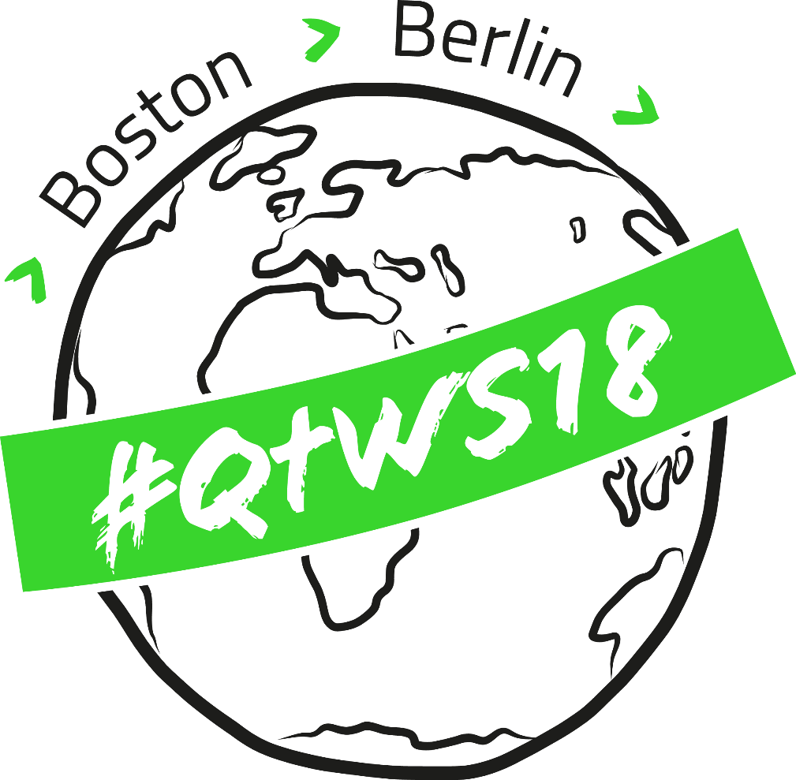
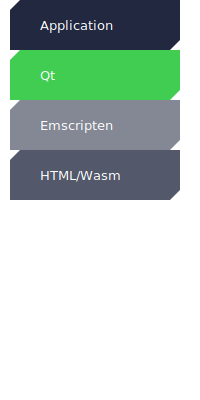
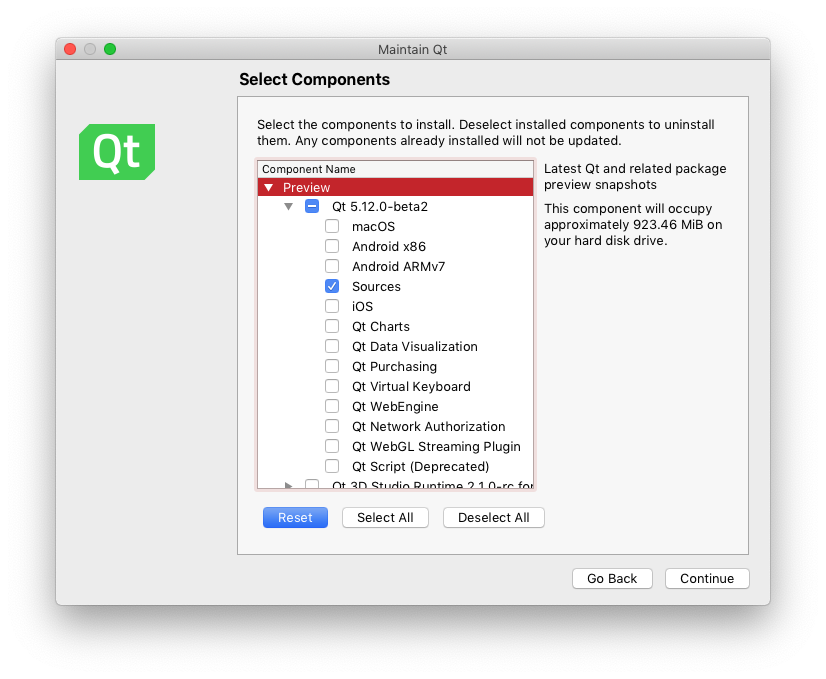

Qt for WebAssembly
morten.sorvig@qt.io
Qt for WebAssembly
Agenda
Qt for Web Browsers
Introduction to WebAssembly and Emscripten
Building for WebAssembly
Qt applications as a <canvas>
Local File Access
Networking
JavaScript and C++ Interop
Qt for Web Browsers
(The story so far)
Qt for Google Native Client
Qt WebGL Streaming
Qt for WebAssembly
Why Qt for Web Browsers
Build once, deploy everywhere
No installation required
Security through sandboxing
Platform Stack
WebAssembly
Emscripten
Qt
New platform for 5.12: Q_OS_WASM
Tech Preview
License: GPLv3 and Commercial
Host system support: GNU/Linux, macOS, Windows Subsystem for Linux
Build Qt from source 
Build Qt from source
$ ~/Qt/5.12.0/Src/configure -xplatform wasm-emscripten
$ makeImplicit configure flags: -static -no-feature-thread
Suppored Modules: QtBase, QtDeclarative, QQuickControls2, QtCharts, QtWebSockets, ++
Not Supported: QtMultimedia, QtWebEngine
The fine print
No system cliboard support
No virtual keyboard support on mobile
No nested event loop support (QEventLoop::exec())
No system font support (bring your own fonts)
No accessibility/screen reader support
Tentative Roadmap (5.13)
System cliboard integration
Virtual keyboard support
Shared library builds
Multithreading
Build Application
$ /path/to/qt-wasm/qtbase/bin/qmake
$ makeWill produce .wasm, .js and .html files
These can be served from any web server
Build Output Files
| Name | Source | Purpose |
|---|---|---|
| app.html | Qt | HTML container |
| qtloader.js | Qt | JS API for loading Qt apps |
| app.js | emscripten | app runtime and JS API |
| app.wasm | emscripten | app binary |
Wasm Binary Size
(compressed)
| Modules | gzip | brotli |
|---|---|---|
| Core Gui | 2.8MB | 2.1MB |
| Core Gui Widgets | 4.3MB | 3.2MB |
| Core Gui Widgets Quick Charts | 8.6MB | 6.3MB |
Application as <canvas>
The application is embedded in the html page as a canvas element
<div>
<canvas>
<!--- App Appears Here -->
</canvas>
</div>The html file controls cavas position and size
The application sees a QScreen with geometry matching that of the canvas
Demo: Slate
Image editor made with Qt Quick Controls 2
Also, full viewport
Local File Access
Sandbox prevents direct file system access
Emscripten creates an in-memory file system, accessible by QFile
HTML has API for opening a file dialog, and starting a file download
Not Compatible with QFileDialog - New API is needed
Local File Access
Callback-based loadFile()
QWasmFile::loadFile("*.txt",
[](const QByteArray &fileContent,
const QString &fileName) {
qDebug() << "Got" << fileContent.count()
<< "bytes from" << fileName;
});
Fire-and-forget saveFile()
QByteArray content = ...;
QString fileNameHint = ...;
QWasmFile::saveFile(content, fileNameHint);
Networking
| API | Protocol | Notes |
|---|---|---|
| QNetworkAccessManager | Http | Same Origin |
| QWebSocket | WebSocket | Any host |
| QAbstractSocket | WebSocket | Websockify forwarding host |
MQTT over WebSocket
JavaScript and C++ Interop
Use case: The applicaiton is a web page component
We want bidirectional transfer of control and state
Emscripten provides API for JavaScript <-> C++ interop
Call DOM API from C++
Using API from val.h
using emscripten::val;
val document = val::global("document");
val input =
document.call<val>("createElement", std::string("input"));
val body = document["body"];
body.call<void>("appendChild", input);
Calling C++ API from JavaScript
Export C++ API to JavaScript
#include <emscripten/bind.h>
void setColor(int r, int g, int b, int colorSpaceIndex);
EMSCRIPTEN_BINDINGS(colorDebugger) {
emscripten::function("setColor", &setColor);
}
Make call from JavaScript
Module.setColor(rgb[0], rgb[1], rgb[2], colorSpaceIndex);